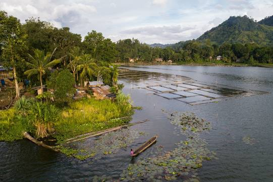
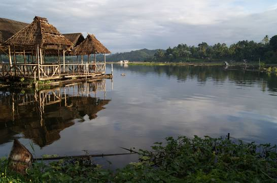
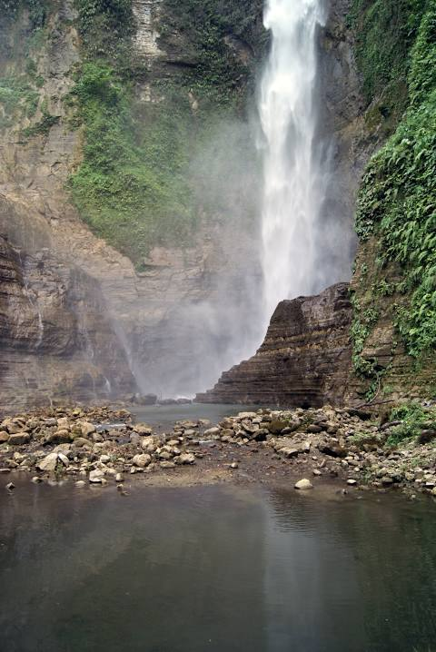
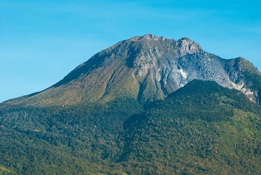
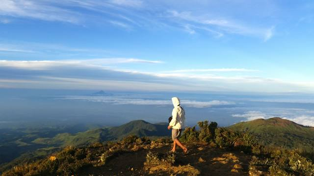

Tinago Falls is a waterfall on the Agus River, located in between the town of Linamon and Iligan City, Lanao del Norte in the northern part of the Philippine island of Mindanao. It is one of the main tourist attractions of Iligan, a city known as the City of Majestic Waterfalls. Tinago is a Filipino term meaning "hidden", the falls being hidden in a deep ravine. Trekking to the falls requires approximately 500 descending steps called the winding staircase. The falls is high, its very cold waters cascading beautifully into a deep and calm basin-like pool which appears like a blue-colored lagoon. Under the falls is a small cave where people can enter and listen to the rumbling waters.
Lake Sebu



Lake Sebu, officially the Municipality of Lake Sebu, is a 1st class municipality in the province of South Cotabato, Philippines. According to the 2020 census, it has a population of 81,221 people. The bestselling Lonely Planet described Lake Sebu as a place located in a “bowl of forests and mountains.” The 42,450-hectare landscape consisting the domains of the Allah Valley is recognized by United Nations Educational, Scientific and Cultural Organization as a cultural landscape in Mindanao.
Mount Apo


Mount Apo, also known locally as Apo Sandawa, is a large solfataric, dormant stratovolcano on the island of Mindanao, Philippines. With an elevation of 2,954 meters above sea level, it is the highest-mountain in the Philippine Archipelago, Mindanao and 24th-highest peak of an island on Earth. Located between Davao City and Davao del Sur in the Davao Region, and Cotabato in Soccsksargen, Mount Apo is the most-prominent mountain in the Philippines. The peak overlooks from Davao City 45 kilometers to the northeast, Digos 25 kilometers to the southeast, and Kidapawan 20 kilometers to the west. It is a protected area and a Natural Park of the Philippines.